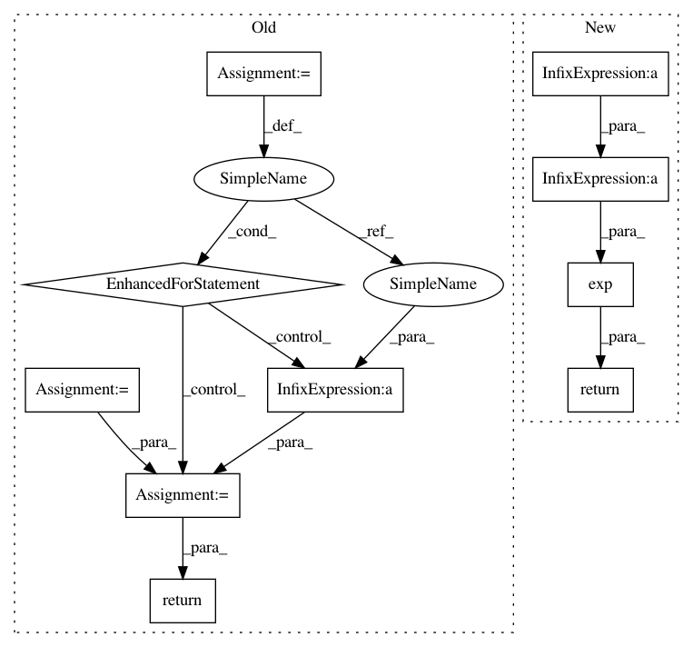

b0f34cdfd3ec8e41521cfd1b4a19c8dabb51fbbf,scipy/stats/_ksstats.py,,_kolmogn_p,#Any#Any#,498
Before Change
// Ruben-Gambino
return 0.0
prd = 1.0
mlt = 2 * t - 1
for m in range(1, n):
prd = prd * m * mlt / n
prd = prd * 2 * n * n
return prd
if t >= n - 1:
// Ruben-Gambino
onemx = 1.0 - x
pdf = 2 * onemx ** (n-1) * n
After Change
if n <= 140:
prd = np.prod(np.arange(1, n) * (1.0 / n) * (2 * t - 1))
else:
prd = np.exp(_log_nfactorial_div_n_pow_n(n) + (n-1) * np.log(2 * t - 1))
return prd * 2 * n**2
if t >= n - 1:
// Ruben-Gambino : 1-2(1-x)**n -> 2n*(1-x)**(n-1)
return 2 * (1.0 - x) ** (n-1) * n
if x >= 0.5:
In pattern: SUPERPATTERN
Frequency: 3
Non-data size: 10
Instances
Project Name: scipy/scipy
Commit Name: b0f34cdfd3ec8e41521cfd1b4a19c8dabb51fbbf
Time: 2020-02-15
Author: pvanmulbregt@users.noreply.github.com
File Name: scipy/stats/_ksstats.py
Class Name:
Method Name: _kolmogn_p
Project Name: AIRLab-POLIMI/mushroom
Commit Name: 501d8a1e7e0cd1fa4f9f6c33385f82bb126b7e79
Time: 2017-11-03
Author: carloderamo@gmail.com
File Name: mushroom/features/basis/gaussian_rbf.py
Class Name: GaussianRBF
Method Name: __call__
Project Name: scipy/scipy
Commit Name: b0f34cdfd3ec8e41521cfd1b4a19c8dabb51fbbf
Time: 2020-02-15
Author: pvanmulbregt@users.noreply.github.com
File Name: scipy/stats/_ksstats.py
Class Name:
Method Name: _kolmogn_p
Project Name: scipy/scipy
Commit Name: b0f34cdfd3ec8e41521cfd1b4a19c8dabb51fbbf
Time: 2020-02-15
Author: pvanmulbregt@users.noreply.github.com
File Name: scipy/stats/_ksstats.py
Class Name:
Method Name: _kolmogn